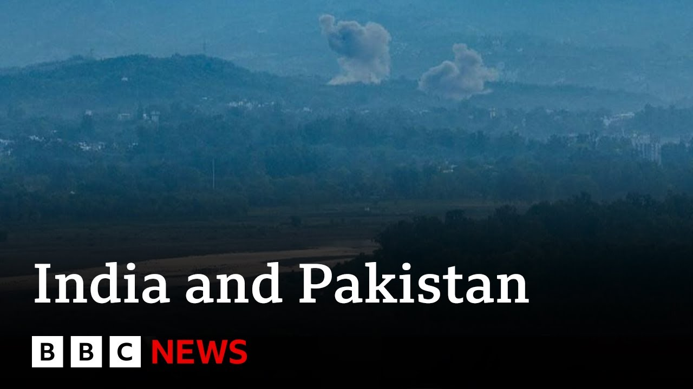

来B站一起耍【Global每日英语简报】
【印度和巴基斯坦互相指责对方向空军基地发射导弹 | BBC新闻】
Summary: Pakistan accuses India of striking its airbases and retaliates, escalating tensions after militants killed Indian tourists in Kashmir. The G7 calls for deescalation as fighting claims over 50 lives.
摘要： 巴基斯坦指责印度袭击其空军基地并实施报复，此前武装分子在克什米尔杀害印度游客导致紧张局势升级。G7呼吁双方降级冲突，目前战斗已造成50多人死亡。

⏱️ Estimated Reading Time: 14 min
Pakistan says it is retaliating after accusing India of striking three of its air bases overnight, including one close to the capital Islamabad.
巴基斯坦称其正在报复，此前指责印度夜间袭击了其三个空军基地，其中包括一个靠近首都伊斯兰堡的基地。
Both countries have blamed each other for the violence since militants killed Indian tourists last month in Indian administered Kashmir.
自上月武装分子在印度控制的克什米尔杀害印度游客以来，两国一直互相指责对方挑起暴力。
Pakistan has denied any involvement.
巴基斯坦否认参与其中。
At least 50 people have been killed since the fighting escalated on Wednesday.
自周三冲突升级以来，已有至少50人丧生。
The G7 group of the world's top industrial nations has called for an immediate deescalation and direct dialogue between the two countries.
由世界主要工业国家组成的七国集团呼吁双方立即降级冲突并进行直接对话。
Last month's militant killing of 26 tourists in Indian administered Kashmir has sparked the worst fighting between India and Pakistan in decades.
上月武装分子在印度控制的克什米尔杀害26名游客，引发了印巴数十年来最严重的冲突。
Let's speak to our correspondent Aruna day Mukuji who is in Delhi for us.
让我们连线在德里的记者阿鲁纳·戴·穆库吉。
Welcome to you Aruna Day.
欢迎你，阿鲁纳·戴。
And there's been a press conference from the Indian author authorities and military in the past half hour or so.
过去半小时左右，印度当局和军方举行了新闻发布会。
What's the latest from them?
他们有什么最新消息？
Well, in fact, I was at that press briefing that took place just behind me in that building where the Indian foreign secretary, Mr. Vicram Mistri, addressed the press along with two senior officials of both the Indian Army as well as the Indian Air Force.
事实上，我就在身后的那栋大楼里参加了新闻发布会，印度外交秘书维克拉姆·米斯特里与印度陆军和空军的两名高级官员一起向媒体发表了讲话。
The same team that has been briefing the press since the developments began.
这是自事态发展以来一直向媒体通报情况的同一团队。
Now at the outset India reiterated that whatever India has been doing has been in response and it is Pakistan they accused of resorting to provocative and escalatory measures.
一开始，印度重申其所有行动均为回应，并指责巴基斯坦采取挑衅和升级措施。
So the Indian press conference started on that tone essentially saying that Pakistan had attempted to violate Indian airspace using high-speed missiles, long-range weapons, drones and other munitions to target sensitive Indian military installations in multiple cities.
印度新闻发布会基本以这一基调开始，称巴基斯坦试图使用高速导弹、远程武器、无人机和其他弹药侵犯印度领空，瞄准多个城市的敏感印度军事设施。
The Indian authorities also pointed out that they had successfully managed to thwart those advances but they also said that there had been limited damage reported at some of its military installations.
印度当局还指出，他们已成功挫败这些进攻，但也表示一些军事设施报告了有限损失。
They also followed up what they said with pictures that they broadcast during that press conference with timestamps to suggest that these pictures were latest pictures and they wanted to impress upon the fact that business was as usual when it came to these sensitive air bases and other military installations.
他们还用带时间戳的图片佐证其说法，这些图片在新闻发布会上播放，以表明是最新画面，并强调这些敏感空军基地和其他军事设施一切如常。
They also accuse Pakistan of continuing to resort to heavy ceasefire violations along the de facto border dividing Indian and Pakistani administered Kashmir that we call the line of control which is recognized internationally.
他们还指责巴基斯坦继续在实际分界线——国际上承认的控制线——沿线严重违反停火协议，这条线将印控和巴控克什米尔分开。
They said that they resorted to heavy shelling which also was targeting some civilian areas especially in a forward town called Rajori in the Indian administered Kashmir region.
他们称巴基斯坦进行了猛烈炮击，还瞄准了一些平民区，特别是印控克什米尔地区一个叫拉乔里的前沿城镇。
In that they said one senior Indian government official had lost his life.
他们表示，一名印度政府高级官员在此过程中丧生。
What the Indian side also impressed upon in that press conference accusing Pakistan of not just targeting military installations in India but also attempting to target civilian areas and civilian infrastructure.
印度方面在新闻发布会上还强调，指责巴基斯坦不仅瞄准印度的军事设施，还试图针对平民区和民用基础设施。
They repeated that multiple times in that press conference as they communicated it to the media that this was absolutely unacceptable and accused Pakistan of resorting to these kind of means.
他们在新闻发布会上多次重复这一点，向媒体表示这完全不可接受，并指责巴基斯坦采取此类手段。
They also confirmed that because of the targeting of civilian infrastructure, civilians had also sustained significant injuries as well.
他们还确认，由于民用基础设施成为目标，平民也遭受了重大伤害。
The situation at the moment remains calm.
目前局势保持平静。
Both countries accusing each other of missile attacks.
两国互相指责对方发动导弹袭击。
Both countries accusing each other of adopting escalatory methods.
两国互相指责对方采取升级手段。
Yeah.
是的。
And meanwhile, we're seeing increasing calls for deescalation from the US Secretary of State Marco Rubio, who's offered to be a bridge between the two countries as well, and China as well.
与此同时，我们看到美国国务卿马可·鲁比奥和中国等越来越多呼吁降级的声音，鲁比奥还提出充当两国之间的桥梁。
So the international community is sensing some urgency here.
因此，国际社会感受到了紧迫性。
Absolutely.
确实。
Because look Samantha, we're entering into uncharted territory in many ways.
因为你看，萨曼莎，我们在许多方面正进入未知领域。
This is a new phase of the escalation of the situation between India and Pakistan when both countries start accusing each other of missile strikes.
这是印巴局势升级的新阶段，两国开始互相指责对方发动导弹袭击。
So far we've been talking about drones.
到目前为止，我们一直在谈论无人机。
We've been talking about artillery fire along the de facto border between Indian and Pakistani administered Kashmir.
我们一直在谈论印控和巴控克什米尔实际分界线沿线的炮火。
But when you as soon as you bring in issues like missiles being fired at each other, two nuclear armed neighbors, well that certainly is a big cause for concern and to draw international attention.
但一旦涉及两个拥核邻国互相发射导弹等问题，这当然会引发极大担忧并吸引国际关注。
What we do know at the moment is the secretary of state in the US Mr. Marco Rubio has had conversations with both sides.
目前我们知道的是，美国国务卿马可·鲁比奥已与双方进行了交谈。
What I can tell you about the conversation with Mr. SJ Shanker who happens to be the Indian foreign minister.
关于与印度外交部长SJ尚卡尔的对话，我可以告诉你的是。
He said that look both sides need to sit together and find ways to deescalate, find methods to deescalate the situation at the earliest.
他说，双方需要坐下来共同寻找降级冲突的途径和方法，尽早缓和局势。
He also said the US was willing to play a proactive role in facilitating these kind of meetings if the countries would wish that to happen.
他还表示，如果两国希望如此，美国愿意积极促进此类会晤。
But again, as we see these allegations and counter allegations, many experts are wondering how much of a window is there for any kind of deescalation through diplomatic means.
但再次，随着我们看到这些指控和反指控，许多专家质疑通过外交手段降级冲突的窗口还有多大。
Run Mukji in Delhi.
德里的鲁恩·穆克吉。
Thank you.
谢谢。
Well, our reporter Deina is in Strinagar where explosions were heard.
我们的记者黛娜在斯利那加，那里听到了爆炸声。
Let's hear from her.
让我们听听她的报道。
We are in central Sinagar and usually at this point of time at 8:00 a.m. local time we have lot of traffic here but right now the city is on the edge because at 5:45 a.m. local time we heard two explosions and they were powerful enough to shake the building of our hotel.
我们在斯利那加市中心，通常当地时间早上8点这里交通繁忙，但现在城市处于紧张状态，因为当地时间5:45我们听到了两次爆炸，威力足以震动我们酒店的建筑。
Just 30 minutes later we also heard three more explosions.
仅仅30分钟后，我们又听到了三次爆炸。
Two eyewitnesses have confirmed to the BBC who lived near the city's airport that they heard the sound of what they described as a jet flying over and then there was a loud explosion at that airport.
两名住在城市机场附近的目击者向BBC证实，他们听到了他们描述的喷气式飞机飞过的声音，然后机场发生了巨大爆炸。
Now, we don't know what was targeted.
目前我们不知道目标是什么。
We don't have any confirmation right now from official sources.
我们目前没有任何官方消息来源的确认。
We were expecting an army briefing in the capital city of Delhi at 5:45 a.m. in the morning, but that has been shifted to later in the day.
我们原以为当地时间早上5:45在首都德里会有军方简报，但这已被推迟到当天晚些时候。
Overnight, the city was plunged into darkness because there was a blackout.
夜间，城市陷入黑暗，因为停电了。
Electricity was switched off.
电力被切断。
It hasn't come back and we have seen this even yesterday.
电力尚未恢复，我们昨天也看到了这种情况。
But we overnight also heard reports of drones and attacks at the border area the line of control that divides Kashmir between India and Pakistan.
但夜间我们还听到了无人机和印巴分治克什米尔的控制线沿线发生袭击的报告。
We can confirm that at least three locations there have been targeted and has been in the intense crossfire and shellings that have been reported there.
我们可以确认，至少有三个地点成为目标，并处于激烈的交火和炮击中，那里已有相关报道。
For now, at least in Shinagar, the situation is tense and we are waiting to see what happens during the day and get some more official information.
目前，至少在斯利那加，局势紧张，我们等待白天的情况发展并获取更多官方信息。
Well, earlier I was joined by Hussein Hakani, a former Pakistan ambassador to the US and he gave us his analysis on the tensions between the two nations.
早些时候，前巴基斯坦驻美国大使侯赛因·哈卡尼加入我们，他对两国紧张局势进行了分析。
The last four days there has been an escalation despite the fact that both India and Pakistan keep saying that they do not want escalation.
过去四天局势升级，尽管印度和巴基斯坦一直表示不希望升级。
It seems that both sides want to have the last word.
似乎双方都想拥有最后发言权。
The terrorist attack of April 22nd was something that disturbed the Indians legitimately.
4月22日的恐怖袭击确实合理地震惊了印度人。
So they felt that they have been having many terrorist attacks for the last three decades and they need to do something about it.
因此他们认为过去三十年来他们遭受了许多恐怖袭击，需要对此采取行动。
When they did something about it, it was not the end.
当他们采取行动时，这并不是结束。
Now Pakistan wanted to retaliate to that.
现在巴基斯坦想要对此进行报复。
In between we've had drone and missile exchanges that have definitely been escalatory in nature and the traditional pattern that these two siblings born on the same day in 1947 as independent countries keep fighting and America comes as nanny to stop them from fighting didn't actually hold.
在此期间，我们看到了无人机和导弹的交锋，这绝对是升级性质的，而这两个1947年同一天作为独立国家诞生的兄弟不断争斗、美国作为保姆来阻止他们争斗的传统模式实际上并未奏效。
Hopefully now President Trump will has decided that he's not going to have this hands-off attitude and that might bring some sense to the table.
希望现在特朗普总统已决定不再采取这种不干涉态度，这可能会带来一些理智。
Yes, I mentioned a moment ago that Marco Rubio, the US Secretary of State, had offered US support to start constructive talks.
是的，我刚才提到美国国务卿马可·鲁比奥提出美国支持启动建设性会谈。
What's your sense of whether that offer will be taken up then?
你认为这一提议会被接受吗？
Well, hopefully it will be taken up and it will deescalate the current situation.
嗯，希望会被接受并缓和当前局势。
But if anybody is expecting a resolution of the problem, that's not going to happen.
但如果有人期待问题得到解决，那不会发生。
India says that the real issue is Pakistani sponsored and Pakistani supported terrorism and it cites a string of attacks that have taken place both in India and in Jammu and Kashmir over the years for which it holds Pakistan responsible.
印度表示，真正的问题是巴基斯坦支持和赞助的恐怖主义，并列举了多年来在印度和查谟-克什米尔发生的一系列袭击，印度认为巴基斯坦对此负有责任。
Pakistan's response is that India also has an internal problem and some of these attacks are because of that.
巴基斯坦的回应是印度也有内部问题，其中一些袭击是由于这个原因。
For example, this latest attack was very far from the Pakistani border and so far India has not been able to find the people who were responsible for it.
例如，最近的这次袭击离巴基斯坦边境很远，到目前为止印度还没有找到责任人。
So, India has a problem that it must address itself.
因此，印度有一个必须自己解决的问题。
In the middle of it all is the concern about nuclear weapons.
这一切的核心是对核武器的担忧。
The world doesn't want these two countries to fight and reach a point where either of them is compelled to use nuclear weapons.
世界不希望这两个国家交战并达到被迫使用核武器的地步。
Will there be talks that will satisfy both sides?
会有令双方满意的会谈吗？
India's concerns about terrorism and Pakistan's concerns about the resolution of the Kashmir dispute that has been unresolved since 1947.
印度对恐怖主义的担忧和巴基斯坦对自1947年以来未解决的克什米尔争端的解决方案的担忧。
I don't think that's going to happen.
我认为这不会发生。
And so we might have deescalation now but we will have a similar crisis when next time there is either a terrorist attack inside India or Pakistan's leaders feel that they have to rally the nation around the flag by saying that Pakistan is under threat from India.
因此，我们现在可能会有降级，但当印度境内再次发生恐怖袭击或巴基斯坦领导人觉得必须通过宣称巴基斯坦受到印度威胁来团结国家时，我们将面临类似的危机。